| 日付 | 2022年8月11日（木） |
|---|---|
| 山域 | 御坂･天子山塊 |
| メンバー | 家族（妻、長男・9歳） |
| 山行形態 | 子連れ日帰り |
| アクセス | 車 |
| ルート (Map) | 東山梨変電所 (9:09) - (10:50) 稜線分岐点 - (10:55) 清八山 - (11:34) 本社ヶ丸 (12:04) - (12:31) 稜線分岐点 - (13:40) 東山梨変電所 |
ほぼ2ヶ月ぶりの山登り。祝日で久々に予定が空いた。
酷暑の予報が出ているので、遠出して高い山に行きたいが、
一方で盆休みの初日に当たるため、高速道路は大渋滞が予想される。
比較的近場で高い山を探し、13年振りに本社ヶ丸に登ることにする。
変電所の先にある小さな登山者駐車場に車を停める。標高905m。
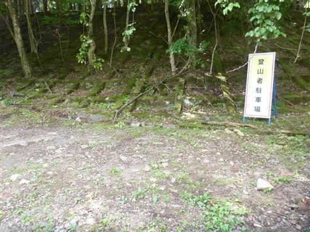
登山者カウンター。清八山と本社ヶ丸のカウンターがある。
本社ヶ丸に登る人は、ほぼ清八山も登るように思うが、本社ヶ丸の方が数値が大きい。
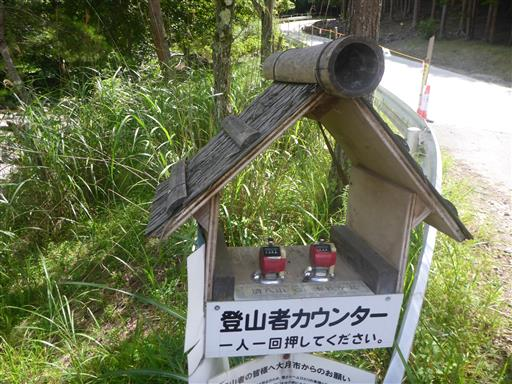
紛らわしい立入禁止の標識。登山道はこの先だ。
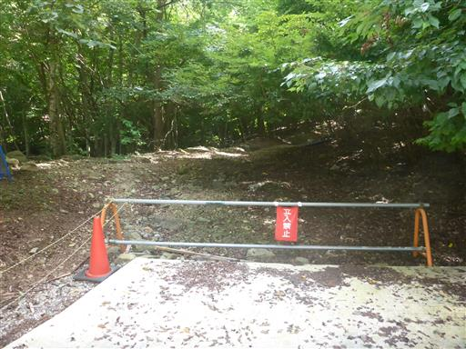
しばらく植林地帯の中を歩く。
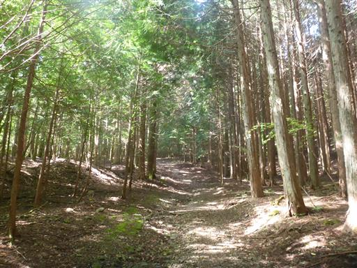
本社ヶ丸の標識が出てきて一安心。
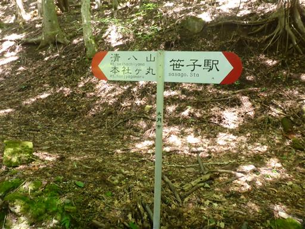
小さな沢を渡る。水が冷たくて気持ちが良い。
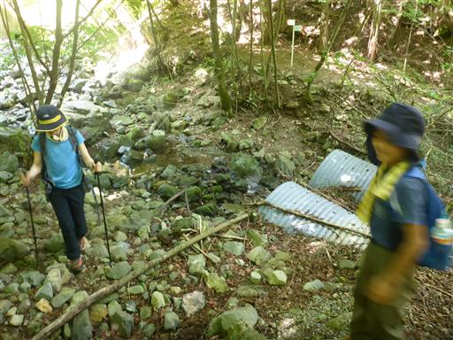
鹿除け柵のゲートを通過。
「豊かな森にするため、ご協力のほどお願いいたします。」と書かれているが、
この先は植林地帯なので目的が異なるような気がする。
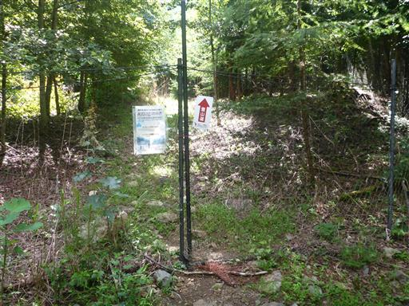
登山道の両脇に苔が生い茂っている。
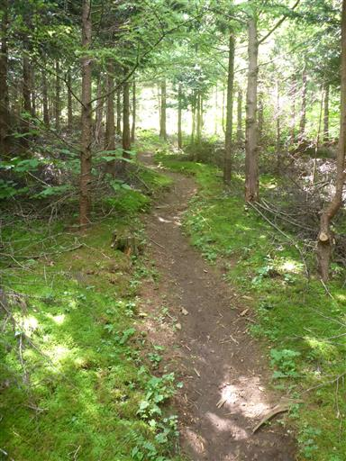
両側から覆いかぶさる葉が少々鬱陶しい。
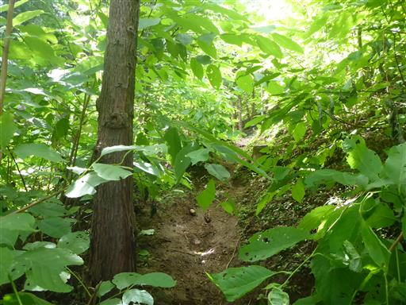
植林地帯を抜けると美しい樹林帯になる。
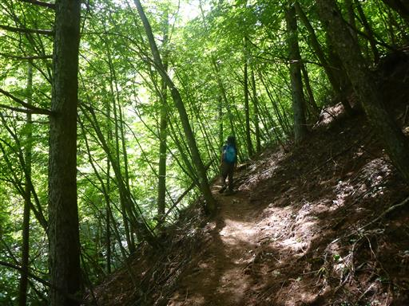
カエルを発見。
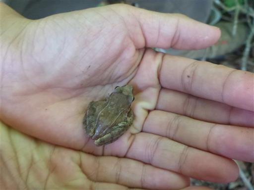
稜線に到達。ここから清八山を往復する。
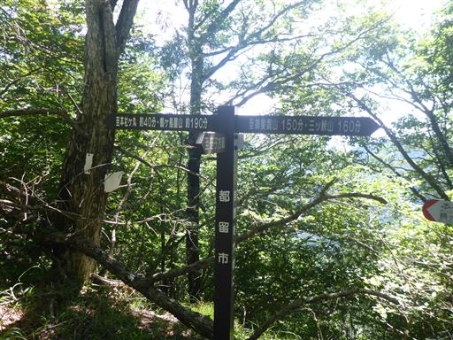
すぐに清八山に到着。標高1593m。
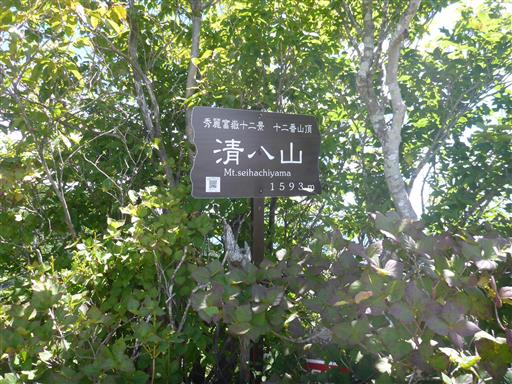
残念ながら富士山はほとんど雲に隠れている。
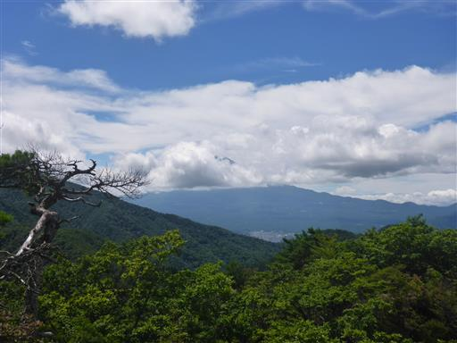
御坂山塊の盟主・黒岳と尖がり頭の釈迦ヶ岳がよく目立っている。
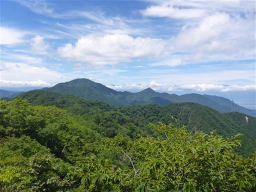
下界には甲府市街がぼんやりと見える。
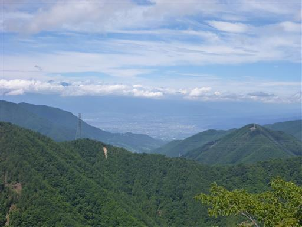
清八山から引き返して、本社ヶ丸に向かう。
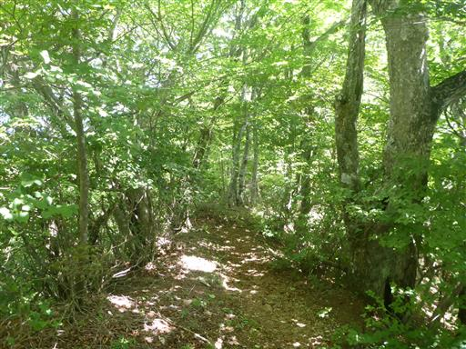
何の糞だろうか？全て石とかベンチとかの上にある。
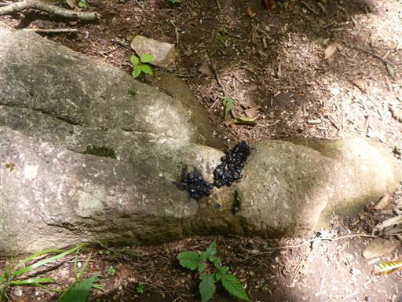
この稜線は岩がちで、アップダウンがある。
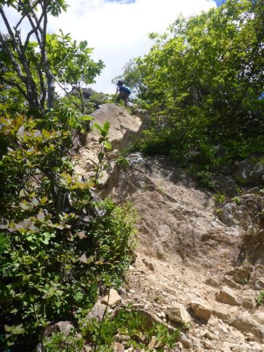
見晴の良い岩の上に出てくる。
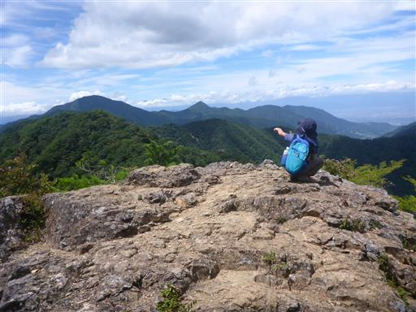
正面に見えるのは三ツ峠山。その背後の富士山は完全に雲の中に隠れてしまった。
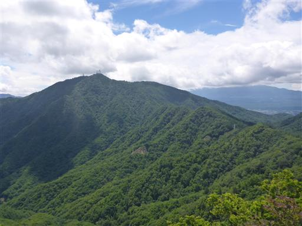
ここからさらに岩山を越える。
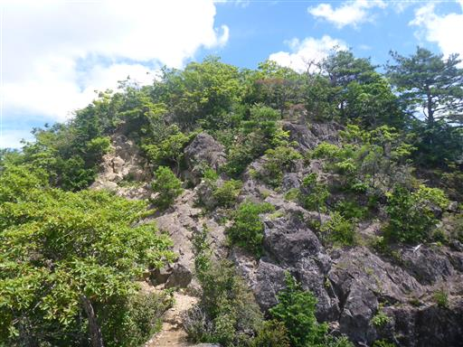
今度は岩場の下り。
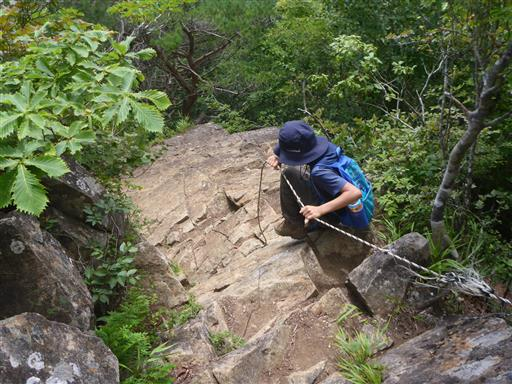
巨大なキノコ。
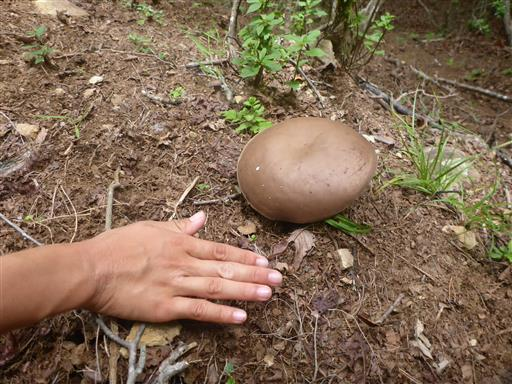
本社ヶ丸山頂に到着する。標高1631m。
これまでは「honjyagamaru」と書かれていたのに、ここの標識だけ「honjagamaru」だ。
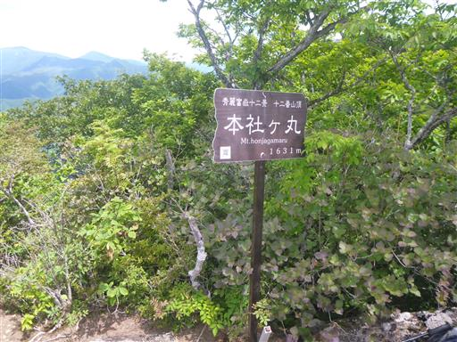
山頂からの展望。周囲の景色が広がるが、肝心の富士山は残念ながら雲の中だ。
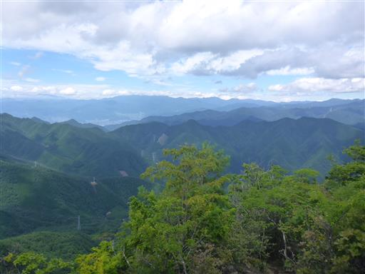
下山は元来た道を戻る。
そこそこ涼しい登山ができたが、前回に引き続きまたしても富士山が見えず残念だった。
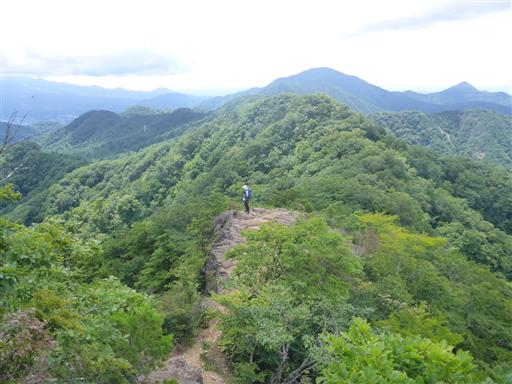